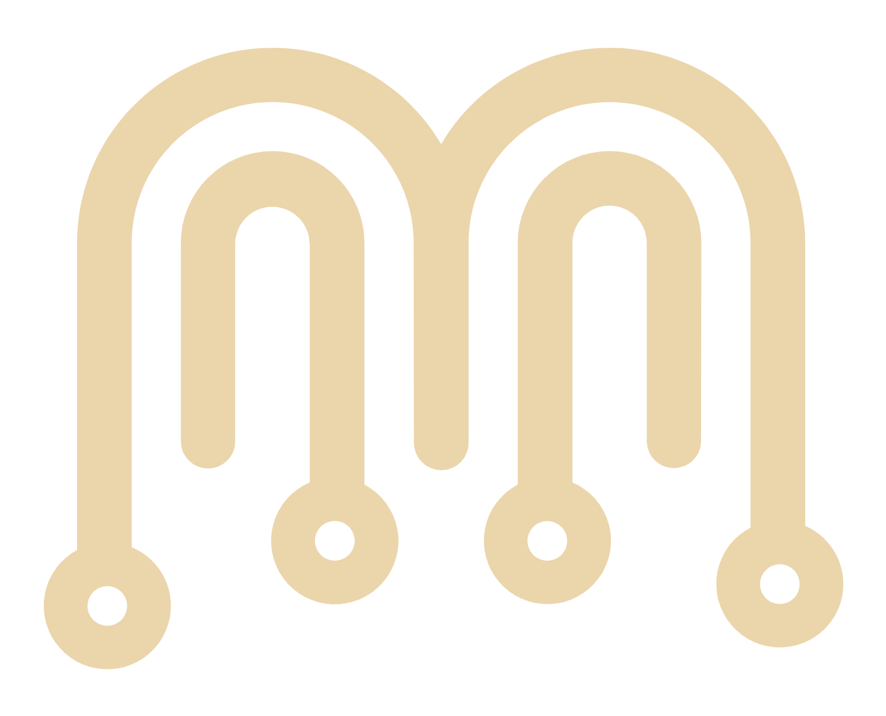

M-
Utility
Sair
Excluir este volume?
Manter
Excluir volume
Score
✕
Impressora Zebra ZT410
Tamanho da etiqueta
Resolução da impressora
203 dpi (8 pontos/mm) · padrão da ZT410
300 dpi (12 pontos/mm)
600 dpi (24 pontos/mm)
Como imprimir
Cópias de cada ticket
IP da ZT410 na rede
opcional · aparece no visor da impressora (Menu → Rede)
Procurando a Zebra…
Como ligar a ZT410 ao M-Utility
Instale o driver
ZDesigner
da Zebra e confira, nas preferências da impressora, o tamanho da etiqueta que está na ZT410.
Instale o
Zebra Browser Print
(gratuito, no site da Zebra), abra e escolha a ZT410 como impressora padrão.
Na primeira impressão o Browser Print pergunta se aceita este site: clique em
Aceitar
. Daí em diante o ticket sai direto, sem janela.
Pela rede
(ZT410 com cabo de rede ou Wi-Fi): escolha "Pela rede" e informe o IP que aparece no visor. O ticket vai direto, sem instalar nada.
Sem janela pelo Chrome
: deixe a ZDesigner ZT410 como impressora padrão do Windows e abra o M-Utility pelo atalho
Abrir M-Utility.bat
(na pasta do projeto). A janela de imprimir não aparece mais.
Sem nada disso:
Janela de impressão
, selecione a
ZDesigner ZT410
, papel do tamanho da etiqueta e margens
Nenhuma
.
Copiar ZPL
Imprimir teste
Pronto